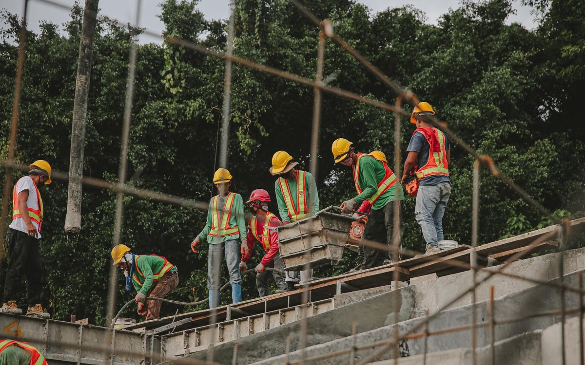
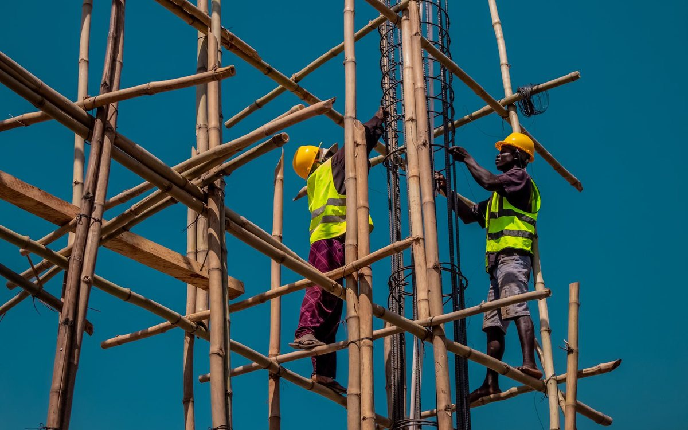

- Home
- Case studies
- Automating Safety & Compliance at a Large Construction Site
Automating Safety & Compliance at a Large Construction Site Using Existing Cameras
A high-risk multi-environment site with heavy machinery, human-vehicle interaction, and regulatory PPE mandates monitored continuously by AI, with zero additional hardware.

Why Manual Safety Enforcement Was Failing
Construction sites enforce safety through a combination of regulations, insurance requirements, and human oversight all of which break down at scale.
Reactive & Manual Safety Enforcement
Incidents were reported after the fact. Supervisors couldn't be everywhere violations went undetected until an injury or near-miss had already occurred.
No Real-Time Visibility Across Safety Zones
The site had multiple active zones heavy machinery areas, restricted zones, pedestrian corridors with no live monitoring across all of them simultaneously.
Understaffed CCTV & Inconsistent Compliance
Cameras were present but monitored by humans who couldn't watch every feed at once. PPE compliance checks were periodic, not continuous creating gaps in enforcement.
Compliance & Governance Gaps
Regulatory reporting was manual and time-consuming. Audit trails were incomplete, creating legal and insurance exposure for the contractor and site owner.

A Site Too Large to Monitor Manually
Multiple active zones, dozens of camera feeds, heavy machinery operating alongside workers the scale made human-only monitoring impossible.
128+ Cameras Multi-Zone Site 24/7 Operations Regulatory Mandate
Why Existing Solutions Couldn't Deliver
The site had invested in cameras and safety staff but the underlying problem was a lack of continuous, intelligent analysis of what those cameras captured.
- Standard CCTV footage recorded but not analysed. Violations visible only in retrospect during incident review.
- Manual patrols safety officers covered a fraction of the site at any time. Non-compliant zones were checked hours apart.
- Periodic audits compliance was measured monthly or quarterly, not continuously. Problems compounded between checks.
- No real-time alerts by the time a violation was identified, the window to prevent injury had passed.
Six Capabilities Deployed Across the Site
KenSafety connected to the site's existing camera network and activated continuous AI monitoring no rip-and-replace, no new hardware procurement.
Real-Time Safety Intelligence
AI monitors every camera feed continuously no human required to watch. Violations are flagged the moment they occur, not hours later.
Human-Vehicle Zone Enforcement
Detects unsafe proximity between workers and heavy machinery. Automated alerts dispatched in under 3 seconds to prevent collisions before they happen.
Continuous PPE Compliance Monitoring
Hard hats, high-vis vests, and safety boots verified across all zones at all times. Non-compliance triggers instant supervisor notification.
Proactive Trespassing Detection
Restricted zones monitored 24/7. Unauthorised entry detected and flagged automatically, reducing liability and securing high-risk areas around the clock.
Blind Spot Elimination
Dynamic site layout changes tracked in real time. AI adapts to new zones, scaffolding additions, and shifting work areas no manual camera reconfiguration required.
Audit-Ready Compliance Reporting
Every incident, alert, and compliance check logged automatically. Regulatory reports generated on demand cutting audit preparation from days to minutes.
Today's Compliance Summary
PPE Compliance Rate 95%
Zone Violations Today 2
Alerts Dispatched 2 · avg <3s
Cameras Active 128 / 128
The Results
Transform Your Construction Site into a Real-Time Safety Engine
Book a 30-minute demo and see KenSafety running live on a construction site feed PPE detection, zone enforcement, and compliance reporting in one view.